Somewhere on top of a rolling hill in Moldova sits this long-silent dome. Long after the military and their equipment left, it remains. Waiting and listening for what's next.
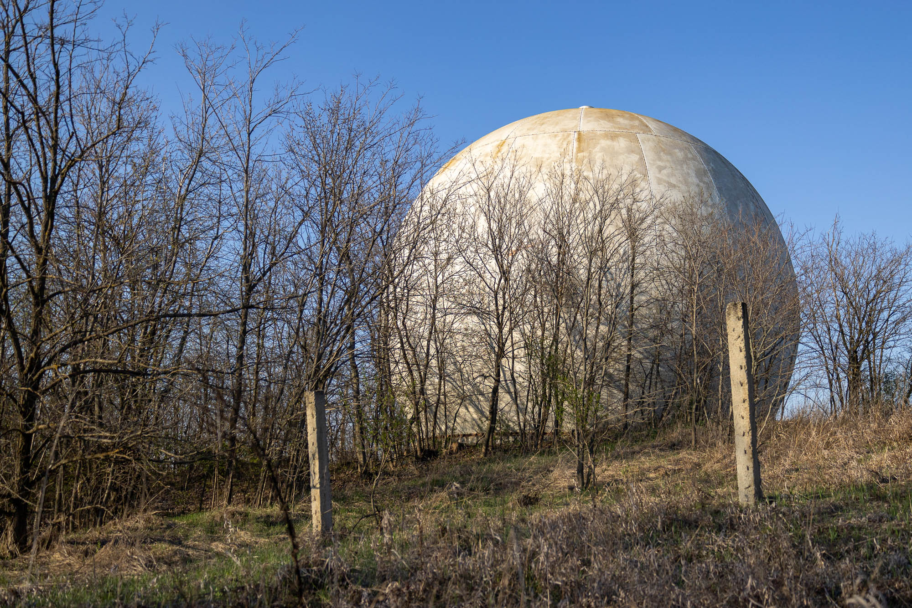
A portmanteau of radar and dome, a radome is a protective structure that houses a radar antenna. It protects the antenna and supporting electrical equipment from the weather. This one was once used by the Soviet military as part of a long-range air detection system in Moldova.
The only information page I was able to find online was in Russian and had been redacted by Roskomnadzor, the Russian federal agency responsible for censoring media. Today, the only hint of the military at this object is the remaining inscriptions printed and scratched onto the dome's walls by soldiers from the past.
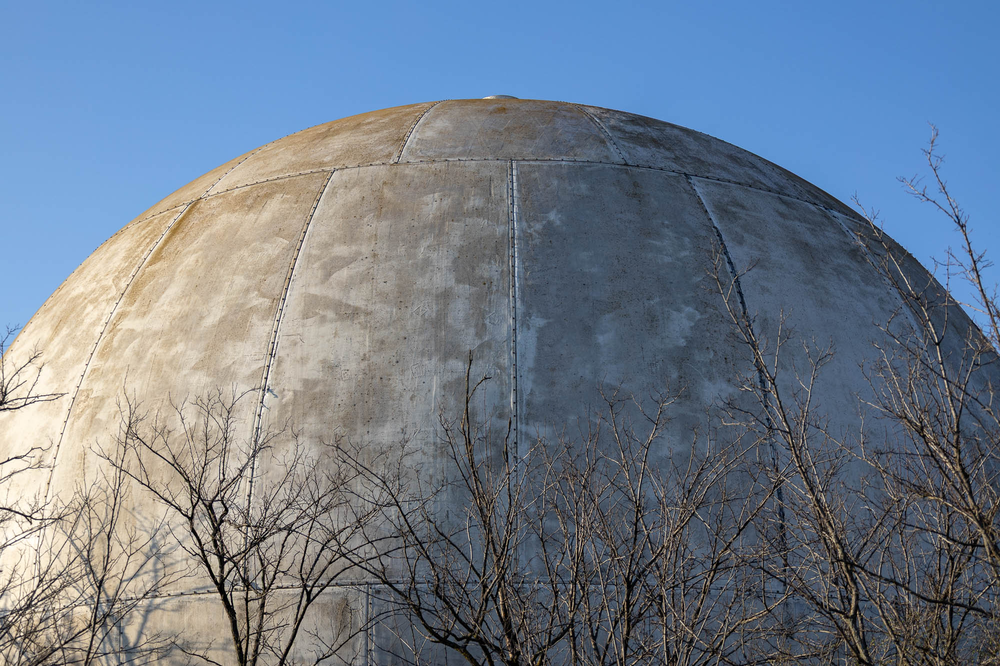
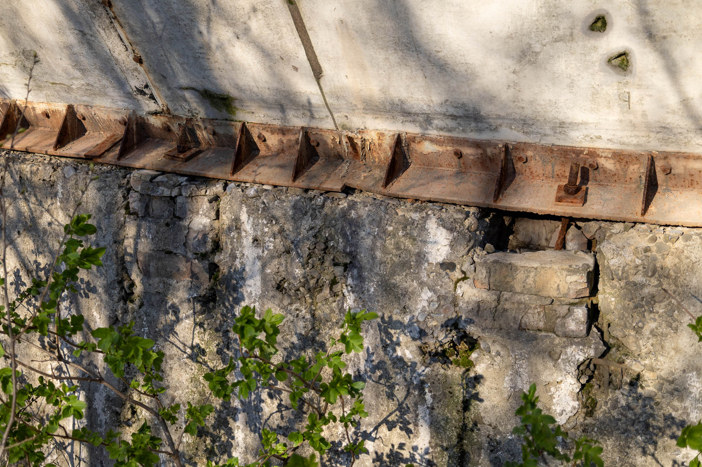
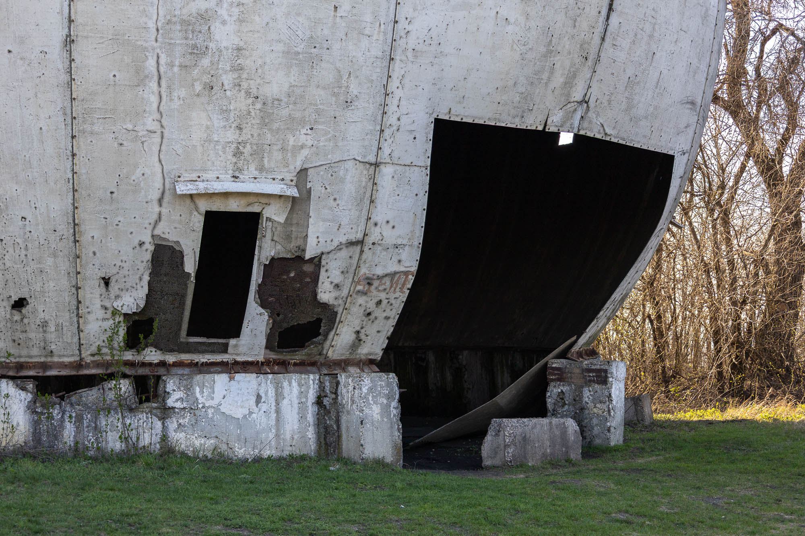
With a diameter of about 18 metres, this is a very large structure you can walk right into. Two human access doors and a larger equipment panel (now on the floor) provide easy access inside the fibreglass and cardboard honeycomb construction. These materials where chosen since they are transparent to radio waves, allowing unobstructed monitoring of the sky.
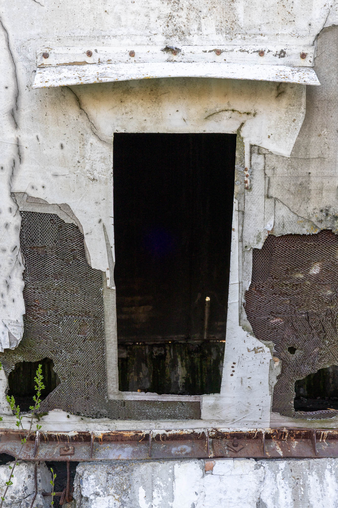
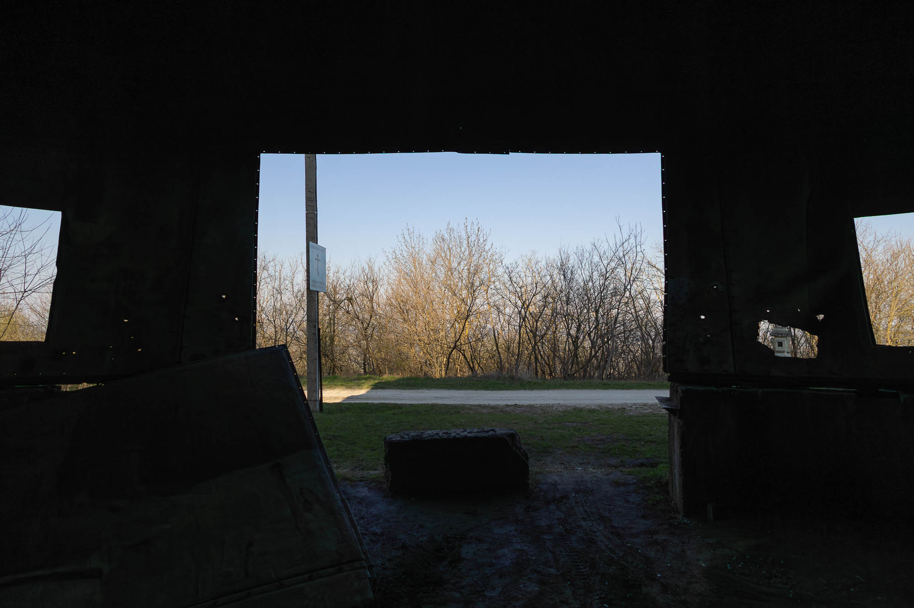
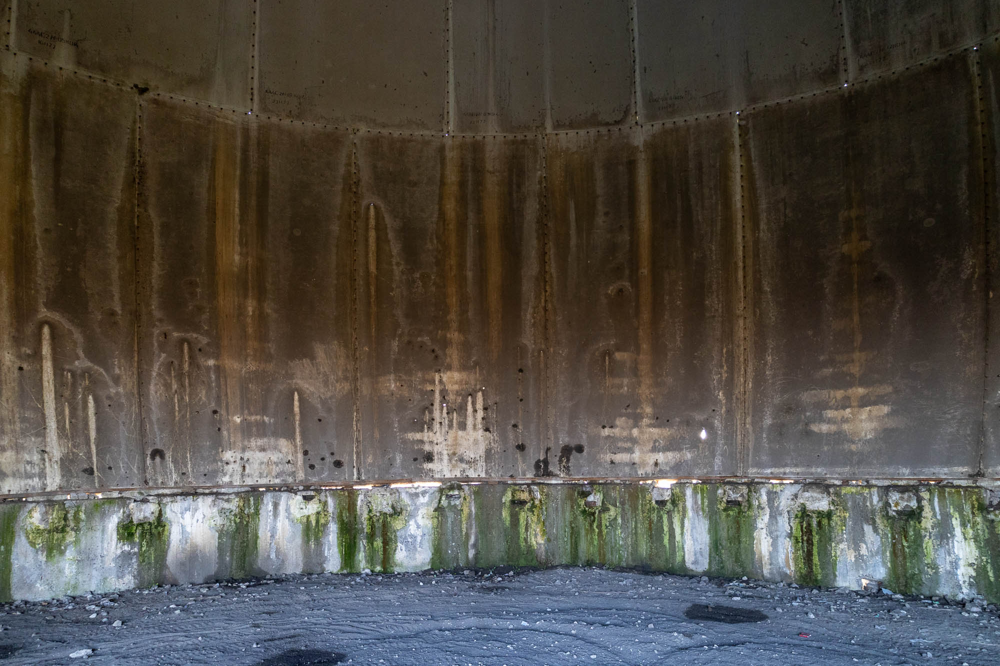
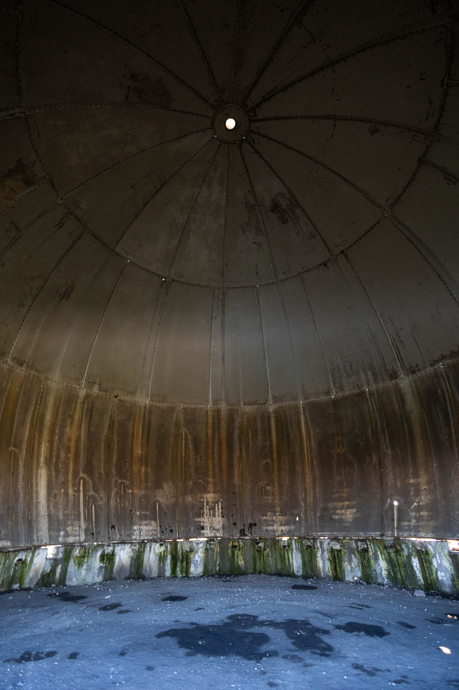
Inside, the acoustics are unlike anything else. Whispers travel around the curved walls for an unnatural length, while claps and other loud noises boom from wall to wall as chaotic echoes.
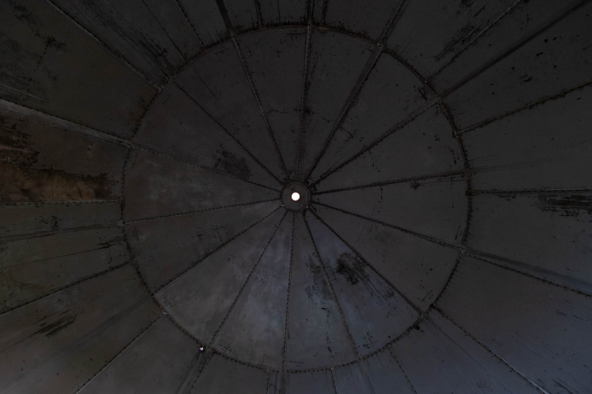
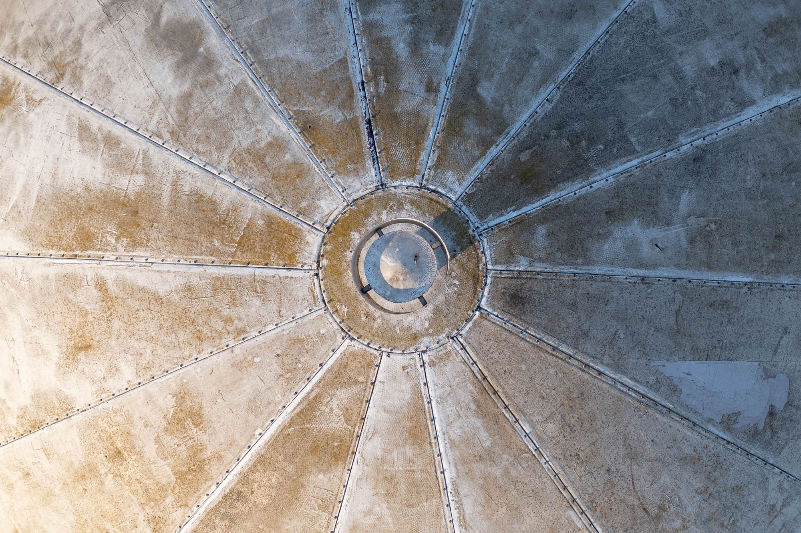
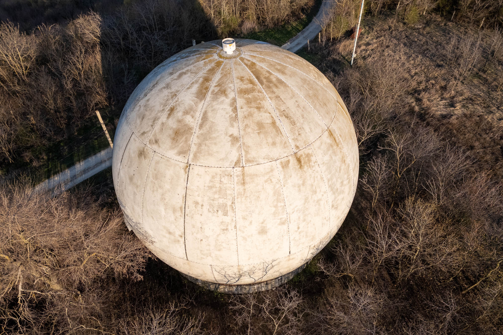
In the distance, you can see the former military barracks-turned-church and many of the rolling hills of Moldova. While the barracks have a solid second lease on life, I'm not sure what will come next for the dome, outside the odd curious visitor.
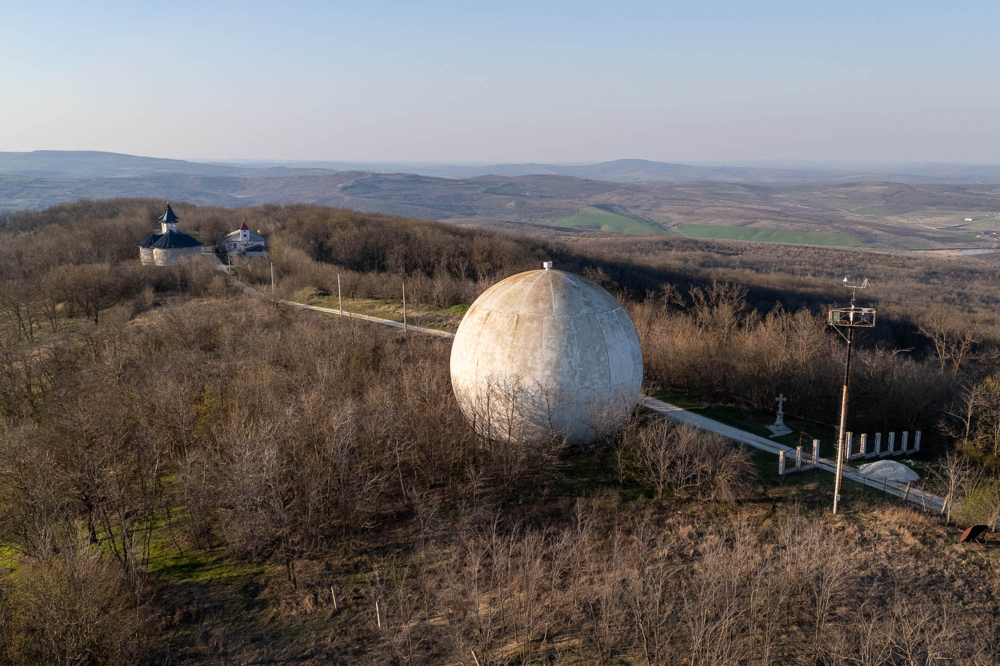